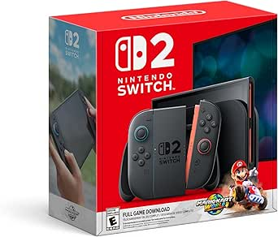
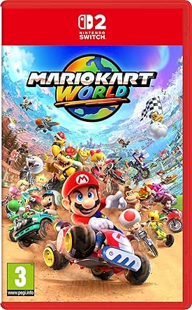
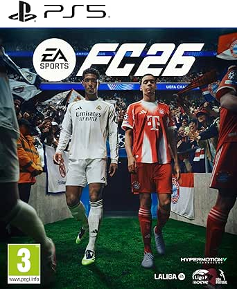
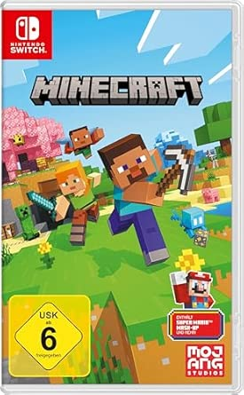
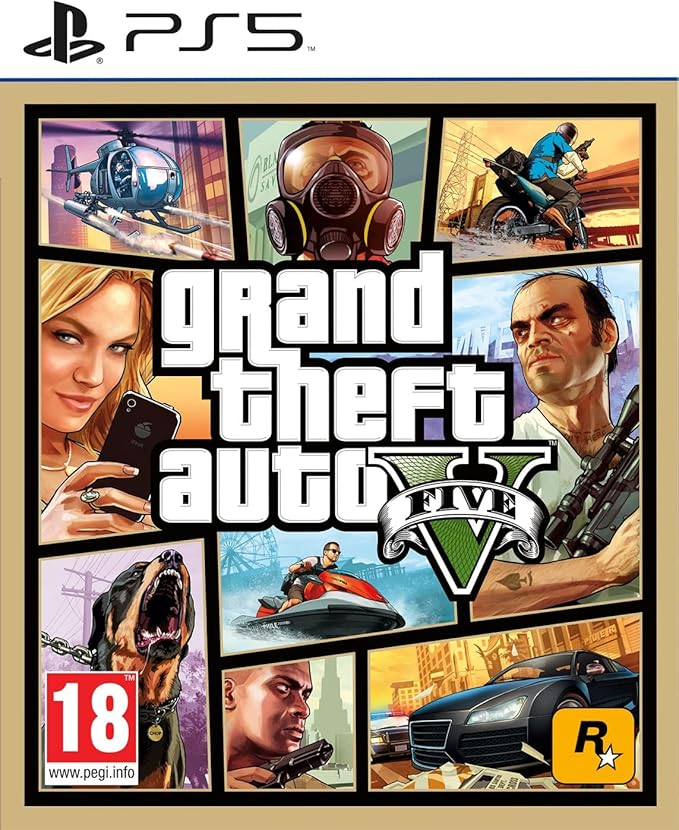
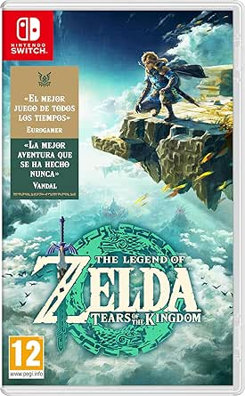
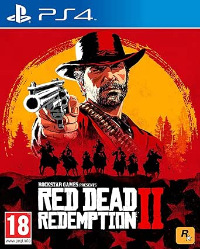
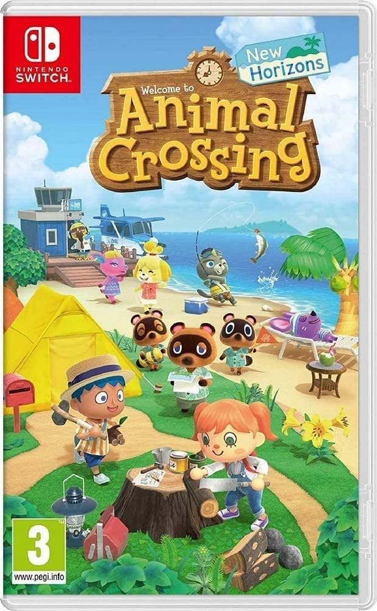
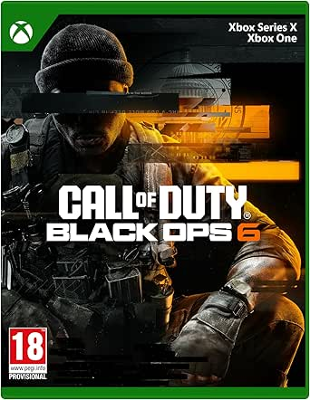
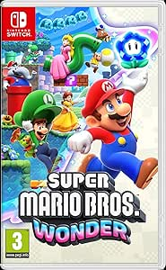

Nintendo Switch 2 + Mario Kart World
El pack más deseado del año. La nueva consola de Nintendo junto al título estrella de lanzamiento que ha arrasado en ventas. Compatible con juegos de Switch anterior.
~ 469,99 €
Comprar en Amazon.es →Los títulos más demandados del momento en todas las plataformas. Desde los grandes exclusivos de Nintendo hasta los últimos éxitos de PlayStation y Xbox. Ranking actualizado con datos reales de Amazon.es.
El pack más deseado del año. La nueva consola de Nintendo junto al título estrella de lanzamiento que ha arrasado en ventas. Compatible con juegos de Switch anterior.
~ 469,99 €
Comprar en Amazon.es →
El juego de carreras más vendido de la historia vuelve más grande que nunca. Nuevos circuitos, personajes y el modo multijugador online mejorado para hasta 24 jugadores.
~ 79,99 €
Comprar en Amazon.es →
El mejor simulador de fútbol del mercado con plantillas actualizadas de temporada. Sistema de IA HyperMotionV mejorado y el modo Ultimate Team más completo hasta la fecha.
~ 49,99 €
Comprar en Amazon.es →
El juego sandbox más popular del mundo en su versión para Switch. Construye, explora y sobrevive en mundos infinitos. Incluye todos los DLC del Minecraft Marketplace.
~ 29,99 €
Comprar en Amazon.es →
La obra maestra de Rockstar Games en su versión más actualizada para PS5. Gráficos 4K, 60fps, nuevas misiones y el modo GTA Online con contenido exclusivo de next-gen.
~ 34,99 €
Comprar en Amazon.es →
La secuela épica de Breath of the Wild. Explora Hyrule y los cielos en una aventura de mundo abierto que superó todos los récords de ventas de la saga Zelda.
~ 59,99 €
Comprar en Amazon.es →
La obra cumbre de Rockstar. Una historia épica del viejo oeste con el mundo abierto más detallado jamás creado. Totalmente compatible y mejorado en PS5 vía retrocompatibilidad.
~ 19,99 €
Comprar en Amazon.es →
El fenómeno social en videojuegos. Construye tu isla soñada, personaliza tu personaje y juega con amigos de todo el mundo en el ritmo de vida más relajante del gaming.
~ 44,99 €
Comprar en Amazon.es →
El regreso del shooter táctico por excelencia. Multijugador renovado, modo Zombie actualizado y una campaña cinematográfica de la Guerra Fría que te tendrá pegado a la pantalla.
~ 69,99 €
Comprar en Amazon.es →
La revolución de la saga 2D de Mario. Nuevas mecánicas de Wonder, más de 100 niveles creativos y un multijugador local para toda la familia. El plataformas imprescindible de Switch.
~ 49,99 €
Comprar en Amazon.es →